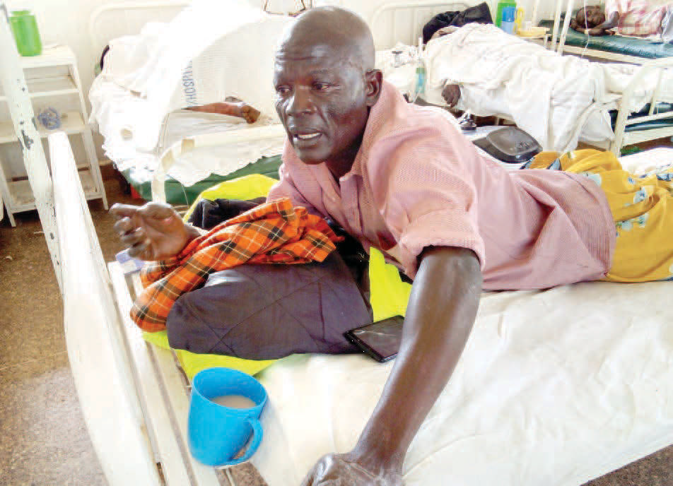

|
||||||||||||||||
|---|---|---|---|---|---|---|---|---|---|---|---|---|---|---|---|---|
| Village loses 13 in tanker tragedy |
|
|---|---|
| 700,000 EU jabs to boost Covid war |
|
|  | |
| Covid-19 vaccine taskforce chair Willis Akhwale. |
|
| Ruto, Raila trade fresh barbs over BBI push | |
| DP says time not ripe to change the former PM tells him he wants to maintain status quo because he is reaping from it |